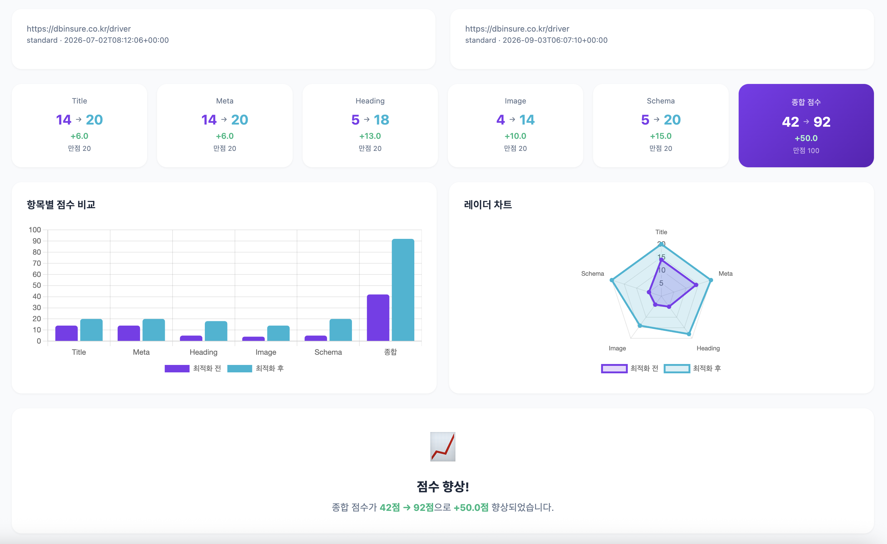
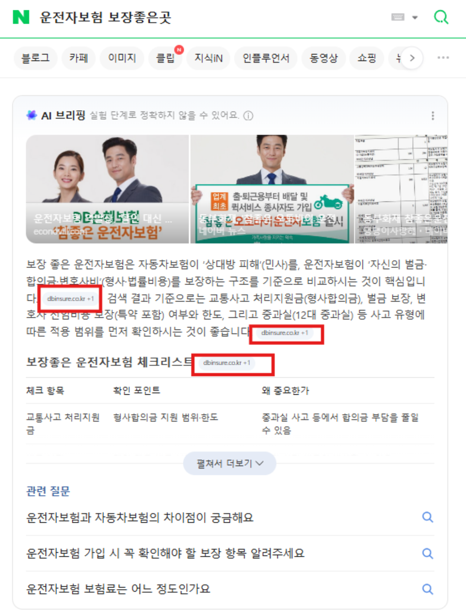

DB손해보험 반응형 리뉴얼
운영 중인 적응형 사이트를 멈추지 않고, 페이지 단위로 반응형 전환을 진행하는 프로젝트입니다.
- 전환 방식
- 페이지 단위 순차 전환
- 담당 범위
- 반응형 퍼블리싱 · 파일 구조 · SEO
- 신규 제작
- 보험 가이드 페이지
- 작업 방식
- 규칙 문서 기반 AI 검수
담당 업무
-
순차 전환 구조 설계
적응형 페이지는 그대로 운영하면서, 전환 대상만 모바일·PC 코드를 하나로 합쳤습니다.
-
반응형 퍼블리싱
분리된 페이지 대신 하나의 마크업과 CSS 분기로 전 구간을 대응했습니다.
-
공통 컴포넌트 분리
페이지마다 복사돼 있던 header·footer·폼을 공통 파일로 통합했습니다.
-
보험 가이드 신규 제작
검색 노출을 염두에 두고 스키마(JSON-LD)와 메타·canonical을 함께 구성했습니다.
작업 방식
전환할 페이지가 많아, 한 페이지에서 정한 기준을 문서로 남기고 나머지는 그 문서를 기준으로 AI(Claude)가 검수하도록 했습니다.
-
기준 페이지 정리
중복과 불일치를 걷어내고 컴포넌트 분리 기준을 확정
-
규칙 문서화
마크업·네이밍·반응형 분기 기준을 마크다운으로 정리
-
교차 검출
나머지 페이지의 태그 누락, 헤딩 붕괴, 네이밍 이탈 탐지
-
검수 반복
시맨틱·접근성·스키마 유효성을 다시 확인
AI 학습용 구조 규칙 문서 Markdown 마크업·네이밍 기준과 자동 점검 체크리스트
# 반응형 전환 페이지 작성 규칙
## 1. 파일 구조
- 공통 요소(header/footer/form)는 `/common/*.php` 로 분리
- 페이지 고유 마크업만 개별 파일에 유지
## 2. 마크업 규칙
- 문서당 h1은 1개, 섹션 제목은 h2 → h3 순서 유지
- 이미지에는 의미 있는 alt 필수
- 모바일/PC 분리 코드 금지 → 반응형 단일 마크업 + CSS 분기
## 3. 네이밍
- 블록: `perCont`, 요소: `faqItem`, 상태: `is-active`
## 4. AI QA 체크리스트 (자동 점검 항목)
- [ ] 닫히지 않은 태그 / 잘못된 중첩
- [ ] 헤딩 계층(h1~h3) 붕괴 여부
- [ ] 규칙 외 클래스 네이밍
- [ ] 반응형 분기 누락 (min/max-width)
- [ ] 스키마(JSON-LD) 유효성 · canonical 존재주요 코드
제목을 누르면 열립니다. 사내 식별자·도메인·내부 코드값은 예시 값으로 바꿨습니다.
보종별 변수 맵 단일 관리 PHP 상품별 값을 한 파일에서 관리하고 페이지 키로 메타·JSON-LD를 분기
<!-- page-vars.php : 상품(보종)별 변수 맵 단일 관리 -->
<?php
if (!isset($page_var_key)) $page_var_key = '';
$page_var_map = [
'product-a' => [
'utm_content' => 'product-a',
'product_code' => 'A0000',
'init_msg' => '상품 A',
'show_chatbot_banner' => true,
'show_chatbot_widget' => true,
'result_site_name' => '상품 A',
],
'product-b' => [
'utm_content' => 'product-b',
'product_code' => 'B0000',
'init_msg' => '상품 B',
'show_chatbot_banner' => false,
'show_chatbot_widget' => false,
'result_site_name' => '상품 B',
],
];
$page_var = isset($page_var_map[$page_var_key]) ? $page_var_map[$page_var_key] : [];
$hero_utm = isset($page_var['utm_content']) ? $page_var['utm_content'] : '';
$hero_code = isset($page_var['product_code']) ? $page_var['product_code'] : '';
$hero_init_msg = isset($page_var['init_msg']) ? $page_var['init_msg'] : '';
?>
<!-- schema-guide.php : 페이지 키 기준 메타/JSON-LD 분기 출력 -->
<?php
if (!function_exists('print_guide_geo_meta')) {
function print_guide_geo_meta($schema_key = '') {
if ($schema_key === 'guide-01') {
echo "\t<link rel=\"canonical\" href=\"https://example.com/guide/guide-01\">\n";
echo "\t<meta property=\"article:published_time\" content=\"2026-04-06T00:00:00+09:00\">\n";
return;
}
}
}
if (!function_exists('print_guide_structured_data')) {
function print_guide_structured_data($schema_key = '') {
if ($schema_key === 'guide-01') {
// [1] Organization, [2] BreadcrumbList, [3] Article, [4] FAQPage, [5] HowTo 출력
echo '<script type="application/ld+json">...</script>';
return;
}
print_default_json_ld($schema_key);
}
}
?>가이드 페이지 메타 · 스키마 JSON-LD canonical, Open Graph, Article · BreadcrumbList · FAQPage · HowTo
<title>가이드 페이지 제목 ... | ○○보험</title>
<meta name="description" content="가이드 페이지 요약 설명 ...">
<meta name="keywords" content="키워드1, 키워드2, 키워드3">
<link rel="canonical" href="https://example.com/guide/guide-01">
<meta property="og:url" content="https://example.com/guide/guide-01">
<meta property="article:published_time" content="2026-03-25T00:00:00+09:00">
<script type="application/ld+json">
{
"@context": "https://schema.org",
"@type": "Article",
"headline": "가이드 페이지 제목 ...",
"datePublished": "2026-03-25",
"dateModified": "2026-04-06"
}
</script>
<script type="application/ld+json">
{
"@context": "https://schema.org",
"@type": "BreadcrumbList",
"itemListElement": [
{ "position": 1, "name": "홈" },
{ "position": 2, "name": "가이드" }
]
}
</script>
<script type="application/ld+json">
{ "@context":"https://schema.org", "@type":"FAQPage", "mainEntity":[ ... ] }
</script>
<script type="application/ld+json">
{ "@context":"https://schema.org", "@type":"HowTo", "step":[ ... ] }
</script>검색 최적화 결과
보험 가이드 페이지(dbinsure.co.kr/driver)의 SEO 분석 점수 변화입니다. Title·Meta·Heading·Image·Schema 5개 항목을 정비해 종합 42점에서 92점으로 50점 올랐습니다.

관련 키워드 검색 시 AI 요약 영역에 가이드 페이지가 출처로 노출된 화면입니다.

주요 성과
- 적응형 운영 중단 없이 반응형 전환 병행
- 페이지 간 마크업 편차와 구조 오류 일괄 정리
- SEO 분석 점수 42점 → 92점 (+50점), Schema·Heading 항목 최대 개선
- 가이드 페이지가 검색 AI 요약에 출처로 노출
- 공통 파일 분리로 수정 지점 축소